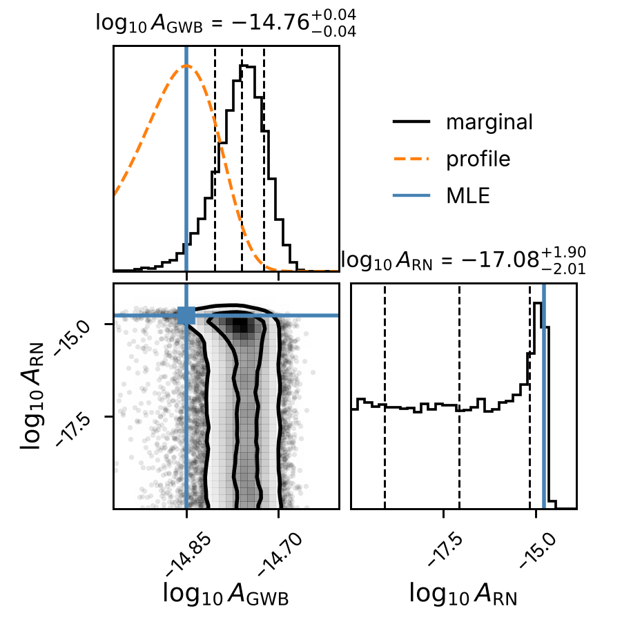
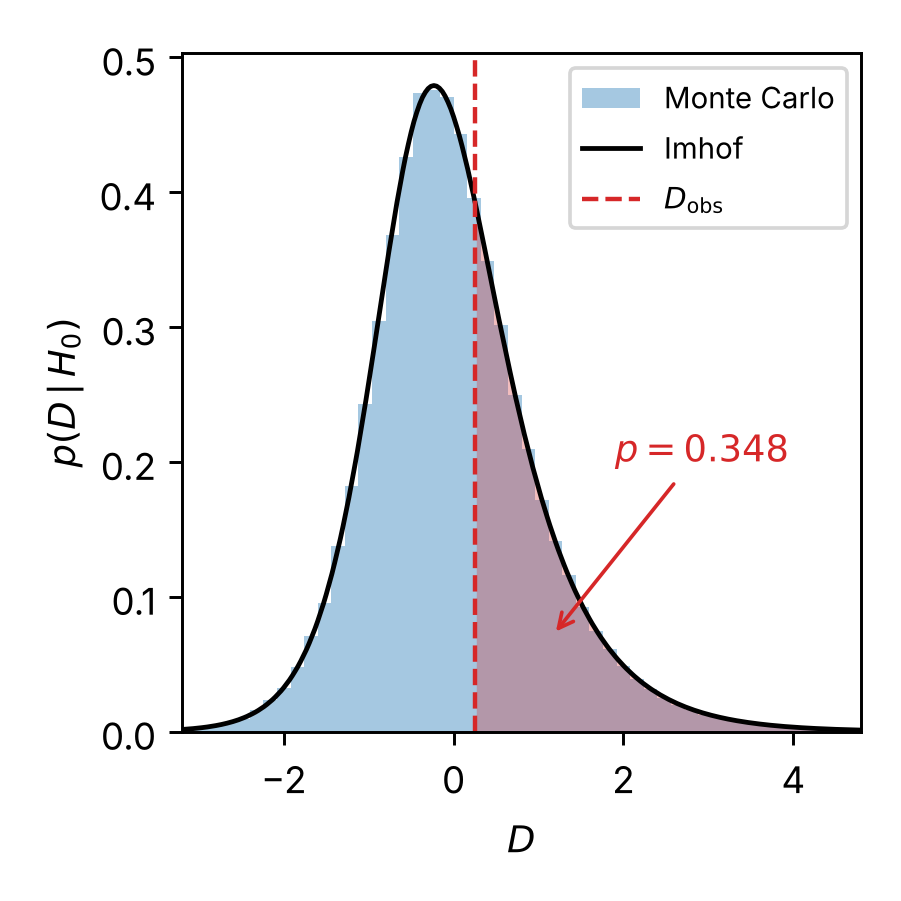

This page keeps some of my essays, the slides from my talks, and notes I took in lectures. If you find a mistake or anything unclear, please feel free to email me.
An essay on quasinormal modes, written as assessed coursework during my Part III year at Cambridge. Score: 85% (α).
Read →
The prior volume effect is the shift of a marginal posterior away from the best fit when nuisance parameters are integrated out, towards parameter values that leave the nuisance parameters more prior volume to fit the data well. At the Tsinghua journal club I used pulsar timing arrays as the example (arXiv:2610.28739) to explain how the log-uniform prior on each pulsar's intrinsic red noise inflates the inferred amplitude of the gravitational-wave background.
Slides · PDF ↗
The talk in which I summarised my research internship at the Max Planck Institute. For details, see the project page.
Slides · PDF ↗